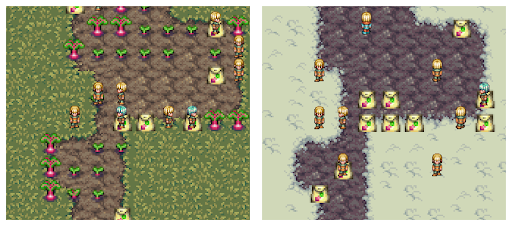
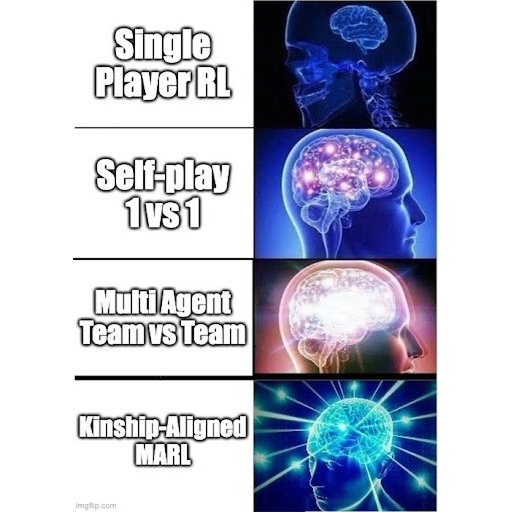
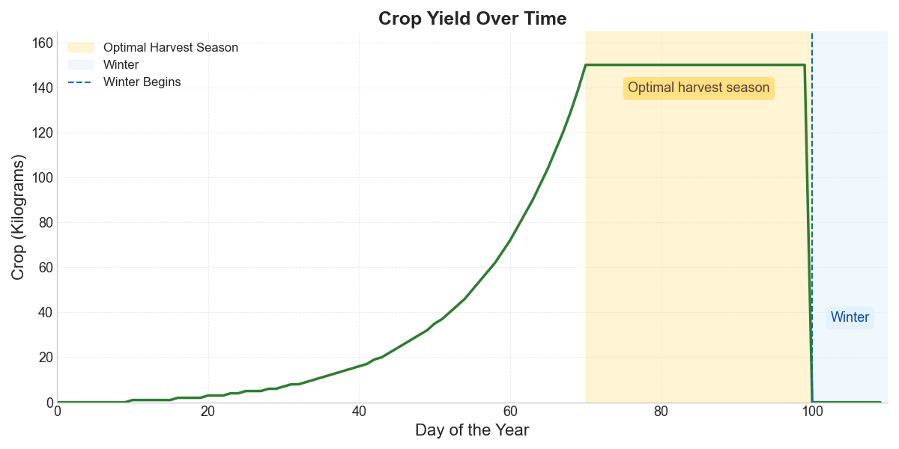
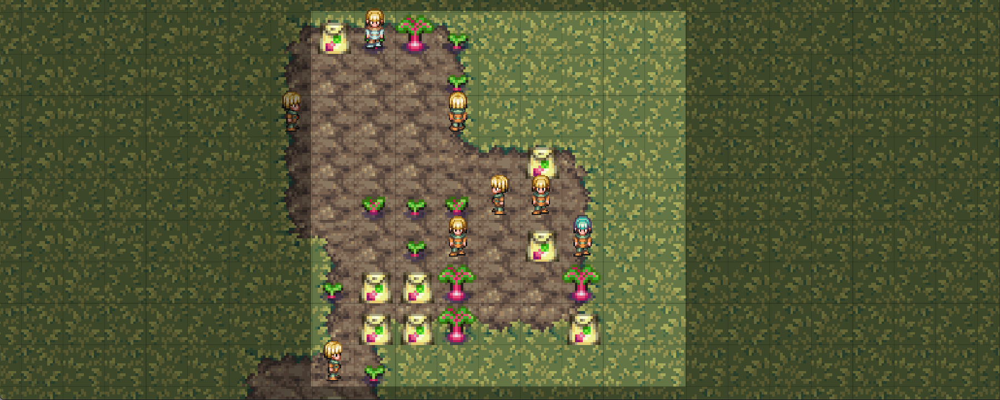

Emerging a Society with MARL Part 1
The Key Properties to Reproduce Society with Multi-Agent RL
Published on 2025-10-13

Humanity’s superpower is our ability to cooperate with strangers at massive scale. To build human-like AI, we may need to let it evolve a society first. That is what I am trying to do in this blog series.
In this first post, I identify the four key properties necessary for society to emerge, and introduce Territories – a new environment where agents with divergent interests either learn to cooperate or see their lineage go extinct.
Large-scale cooperation with identical kin (i.e., identical DNA), as seen in some species of clonal ants, is relatively easy. Every ant in a colony shares the same ultimate goal: protecting and reproducing the genes they all share. Since they share the same genome, they are 100% aligned. This is similar to how every cell in your body is aligned to help you survive and reproduce.
When everyone shares the same interest, cooperation is effortless. The real challenge emerges when agents with divergent interests stand to benefit from cooperation. To overcome trust issues and misaligned incentives, complex social behaviors must evolve like: identity recognition, status hierarchies, reputation tracking, communication, and the ability to make and enforce promises.
Additionally, there is compelling evidence that emotions such as love, friendship and grief have evolved independently in social species such as elephants, dolphins, whales and humans [1]. These emotions help solve the challenges of frequent social interaction within a species where its members share only a portion of their genes.
Traditional MARL has largely studied cooperation in binary settings — agents either fully cooperate or compete. While this reveals insights into species like clonal ants, I believe continuous degrees of cooperation will lead to far more complex social intelligence. In this series, I explore exactly that using kinship-aligned MARL.

The Key Properties for Society to Emerge
We have already identified the first key property for the emergence of human-like intelligence: collaboration beyond identical kin.
As Richard Dawkins popularized in The Selfish Gene [2], evolution is better understood from the gene's perspective, where genes compete for their own survival and replication across multiple organisms. From the organism's perspective, however, evolution creates a more nuanced situation: cooperation with family members who share your genes, and competition with unrelated agents who don't.
This leads to kin selection, which is the evolutionary pressure for agents to cooperate with relatives in proportion to their genetic relatedness. J.B.S. Haldane informally summarised this when he jokingly said: "I would gladly lay down my life for two brothers or eight first cousins". He was alluding to the fact that in diploid species like humans, siblings share half their genes by descent on average, while first cousins share one-eighth. From the gene's perspective, sacrificing yourself to save two siblings or eight cousins is neutral, evolutionarily speaking.
But what drives social species to cooperate outside of their kin, and, why did humans take it to an entirely new level?
The answer is valuable shared resources such as territories.
Territories are essential to social animals. They serve as a place to store resources, raise vulnerable offspring, and safely sleep. Just as the cellular membrane makes the cell possible, the territorial frontier makes society possible. In both cases, the boundaries are needed to coordinate the parts and tell them which regions need to be maintained and which do not; where order should be preserved and where entropy may rise.
Farming made territories far more valuable. Each harvest demanded months of labor, and the goods couldn’t be easily carried; they had to be stored and defended in place. This sparked a social arms race: groups capable of larger-scale cooperation could more easily attack or protect the immense wealth stored in farms. But larger groups bring new problems: kinship ties grow weaker, and members can no longer interact repeatedly with everyone, undermining simple strategies like tit-for-tat. The more value farms held, the more evolution favored bigger groups — and the more sophisticated social intelligence had to become. Success depended not only on social behaviors like identity recognition, reputation tracking, and promise-making, but also on new innovations like arithmetic for accounting and taxation.
We’ve now identified the second key property for the emergence of human-like intelligence: the environment should benefit agents that collaborate in larger groups (for example, with the existence of shared resources).
We’re just missing two other key properties: reproduction and competition.
Survival and replication are core to how evolution works, and they make social dilemmas far richer. In a static world, a shared resource can survive being exploited by a single free-rider who consumes the good without ever contributing to it. But in an evolving world, free-riders reproduce faster than cooperators — forcing either the emergence of new social mechanisms to suppress exploitation or the collapse of the common-pool resource.
Sexual reproduction, specifically, adds another fascinating layer: it allows alliances between strangers. When members of two distinct families reproduce, they are producing an individual whose survival and reproduction benefits both lineages — aligning interests that were once separate.
The environment in which cooperation evolved was never purely cooperative; it also imposed dynamic competitive pressures that shifted with resource availability and kinship. Agents that consume the same limited resources are automatically in competition. The intensity of this competition depends both on kinship and resource scarcity. When resources are abundant, agents benefit from helping even distant relatives. But as scarcity increases, even close kin begin to compete — since the same resources could yield higher evolutionary returns when allocated to offspring that share more of their genes.
Together, we have identified the minimal ingredients for society to emerge. We can summarize them as four key properties:
- Continuous degrees of cooperation: from teams to families.
- Environments that reward large scale collaboration through shared resources like territories.
- Reproduction, with sexual reproduction introducing alliances between unrelated agents.
- Competition, driven by limited shared resources.
Building, maintaining, and distributing shared resources among non-identical kin is a never-ending challenge — one that even modern societies struggle to solve. If agents could gain resources faster by polluting the air that everyone breathes, could they evolve mechanisms to prevent collective intoxication? Exploring such open questions requires a multi-agent reinforcement learning environment that captures these key properties.
Territories: The Primordial Social Soup
To explore how the above properties might give rise to true societies in silico, I designed a new multi-agent environment.
In our previous work (blogpost [3], paper [4]), we moved beyond the binary cooperative setting by extending the concept of team to that of a family, introducing continuous degrees of cooperation proportional to kinship. We also implemented sexual reproduction and competition over a shared resource pool.
Even with these basic ingredients, complex cooperative behaviors began to emerge. In our earlier environment, reproduction required two agents to be adjacent — but that proximity carried a risk: mating pairs became easy targets for attackers who could kill them and seize their resources. Avoiding others entirely wasn’t viable either; agents that stayed isolated eventually died of old age without reproducing. To overcome this dilemma, agents developed an emergent behavior: they maintained distance most of the time, but when fertile and well-fed, they converged on a shared Schelling area to mate quickly before dispersing again. This collective breeding ground minimized vulnerability while ensuring that agents ready to reproduce could find each other efficiently.
One key ingredient was still missing: a mechanism that directly rewards agents for collaborating in larger groups. This is precisely the role of our new environment, Territories.
Territories is a 2D grid world with a new game mechanic that creates both the need and ability to store resources within a shared territory. Each agent must consume food to survive and reproduce. Food grows only on certain tiles, and only during the Summer season. In Winter, all crops die, food does not grow and agents must rely on stored food. Since each agent can carry only a limited amount of food, surplus must be stored somewhere in the environment, accessible to others. Agents can protect these stores by constructing stone walls, defining and defending their own territories.
Two screenshots from Territories. Left) Summer time, the crops are growing on the soil, and there are some packaged produce. Right) Winter time, the crops are gone, only the packaged produce remains as a possible source of food.
This mechanic restores a dimension of realism that most strategy games abstract away. In Age of Empires, StarCraft, or Dota, gathered resources are magically safe and instantly available anywhere, bypassing the social tensions that arise when wealth must be stored, defended, or shared. Territories brings those tensions back. For the first time, property rights, trust, and collective defense are not hardcoded in; they must emerge.
During Summer, crops grow exponentially, making the optimal harvest just before Winter, when all crops would otherwise die. This setup provides a clear signal for collaboration: a group cooperatively sharing a territory should coordinate to harvest at the optimal time. However, intruders or free-riders will harvest (steal) opportunistically whenever they can.
 How crop growth evolves throughout the year. Note that if the crop is harvested the growth restarts from zero.
We can measure cooperation not only through harvesting patterns but also through division of labor (mining stone, building walls, reproducing, harvesting, storing food) and spatial clustering; agents that are collaborating will spend most of their time within the same territory.
More details on the environment like the observation and action space are described at the Appendix at the end — you can also just look at its open-source code. The first version of our environment was implemented in C, inspired by Neural MMO [6]. Training runs on our infrastructure was built around PufferLib [5], a library optimized for high-throughput multi-agent reinforcement learning. We extended it substantially to support a dynamic number of agents and continuous degrees of cooperation. Depending on community interest, we can also open-source the training infrastructure.
Territories represents just one possible instantiation of an environment that satisfies the four key properties discussed above. Other designs that honor those same principles could also give rise to complex social behavior. However, Territories provides a flexible foundation for exploring a wide range of hypotheses about cooperation and emergent societies. For example:
- What collaboration challenges can be solved with spoken language?
- What becomes possible with written systems — will they develop contracts, taxes or even laws?
- What if agents have access to private communication channels between them (end-to-end encryption)?
These and other questions about emergent social intelligence will be explored in future posts.
Emerging a Society with MARL Series
- Part 1: The Key Properties to Reproduce Society with Multi-Agent RL
- Part 2: Evolution Acts Like an Investor
Acknowledgements
I would like to thank Arnaldo Abrantes and Yujin Tang for reading and improving an early version of this post.
All errors, omissions and imprecisions remain my own.
Appendix: Details on the Environment (these might change often)
 A screenshot from Territories centred on an agent with a 9 by 9 vision of the world. We can see some crops growing in the soil and some packaged (ready for winter!). Some agents have different genes as it can be seen from the different skin tones, hair colors and outfits.
At every step, agents get hungrier unless they are carrying some food — which they will consume automatically. If their hunger goes beyond a certain level they die. Additionally, they can’t be very hungry to reproduce as reproduction consumes a lot of satiation points. Reproduction is sexual, it requires two agents to be near each other and both taking the “reproduce” action.
The world has two resources:
- Crops that grow during Summer and can be harvested by agents.
- Stones that are a finite resource that can be mined by agents and then be used to build walls.
The action space is made of 11 discrete actions:
- to 4. Move Up, Right, Down and Left
- No action
- Harvest/Pick up package
- Mine stone (needed to build walls)
- Package produce and drop it
- Attack (nearby agents or walls)
- Build wall
- Reproduce
The observation space of each agent is made of the following components:
Vision: Each agent observes a 9 by 9 square crop of the surrounding state. For each visible tile the agent sees the following features:
- Tile type (soil or grass)
- Amount of crop
- Amount of packaged produce
- Amount of stone
- (If wall in tile) Wall health points 6 to 10 + number of genes. (If agent in tile)
- Kinship relative to the observing agent
- Health points
- Age (Reproduction is only possible after achieving a minimum age)
- Satiation
- Heading
- Role 12 to 12 + number of genes: DNA
Self Information: The agent also receives a vector with its own properties:
- Food in inventory
- Stone in inventory
- Health points
- Satiation points
- Age
- Role (more info on this, in future posts)
- to 6 + number of genes: DNA (more info on this in Part 2)
World Information: The agent also receives a vector with some some general knowledge about the world state:
- Absolute y position
- Absolute x position
- Day of the year
- Family size
- World population
Citations
[1] Christakis, Nicholas. "BLUEPRINT The Evolutionary Origins of a Good Society." (2019)
[2] Dawkins, Richard. The selfish gene, 1976.
[3] https://abranti.com/mimicking-evolution-with-reinforcement-learning.html
[4] Abrantes, João P., Arnaldo J. Abrantes, and Frans A. Oliehoek. "Mimicking evolution with reinforcement learning." arXiv preprint arXiv:2004.00048 (2020).
[5] Suarez, Joseph, et al. "Neural MMO 2.0: a massively multi-task addition to massively multi-agent learning." Advances in Neural Information Processing Systems 36 (2023): 50094-50104.
[6] Suarez, Joseph. "Pufferlib 2.0: Reinforcement learning at 1m steps/s." Reinforcement Learning Conference. 2025.